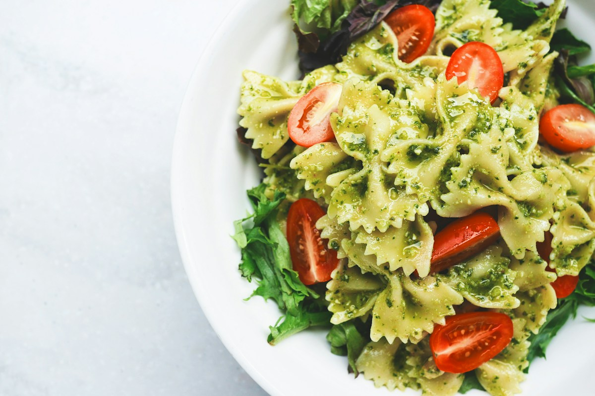

Os olhos também
escolhem o preço.
Uma foto de comida. Um olhar da máquina.
Descubra o preço que o nosso modelo imagina.

SEU PRATO, SOB UM NOVO OLHARO que uma foto
tem a dizer?
À mesa com
a sua foto.
Envie a imagem de um prato e deixe o modelo
estimar seu preço de cardápio.
Algumas previsões ficam mais perto, outras mais longe. Este valor não é um intervalo garantido.
O modelo usa cores e brilho da imagem. Ele não conhece ingredientes, porções ou o restaurante.
Dados reais.
Curiosidade à vontade.
Um pequeno modelo.
Uma pergunta interessante.
Quanto do preço de um prato está na sua aparência? Este experimento usa regressão Ridge com 56 características de cor e brilho para investigar essa relação.
O baseline foi treinado com 1.065 imagens e avaliado em outras 331, separadas por restaurante. O erro médio foi de US$ 5,69, contra US$ 6,67 ao prever sempre a mediana do treino. Outras 250 imagens permanecem reservadas para o teste final.
Os dados são de cardápios em dólares. A estimativa não representa preços no Brasil nem quanto uma pessoa pagaria. Este é o baseline do M2; a ResNet-18 ainda não foi avaliada.
Explorar o código do experimento ↗